18 October 2017
ggplot2
Learning objectives
You will learn to:

By the end you should be able to:
- Understand the basic grammar of ggplot2 (data, geoms, aesthetics, facets).
- Make quick exploratory plots of your multidimensional data.
- Know how to find help on
ggplot2when you run into problems.
Before, there was ggplot1
Released in 2005 until 2008 by Hadley Wickham.
If the pipe ( %>% in 2014) had been invented before,
ggplot2would have never existed Hadley Wickham
Original syntax
# devtools::install_github("hadley/ggplot1")
library(ggplot1)
p <- ggplot(mtcars, list(x = mpg, y = wt))
# need temp p object to avoid too many ()'s
scbrewer(ggpoint(p, list(colour = gear)))with the pipe
library(ggplot1) mtcars %>% ggplot(list(x = mpg, y = wt)) %>% ggpoint(list(colour = gear)) %>% scbrewer()
ggplot2
library(ggplot2)
mtcars %>%
ggplot(aes(x = mpg, y = wt)) +
geom_point(aes(colour = as.factor(gear))) +
scale_color_brewer("gear", type = "qual")Issue
Introduced a break in the workflow from %>% to +
What is ggplot2
released in 2007
ggplot2stands for grammar of graphics plot version 2- Inspired by Leland Wilkinsons work on the grammar of graphics in 2005.
- The idea is to split a graph into layers: for example axis, curve(s), labels.
- 3 main elements are necessary: data, aesthetics and at least one geometry
source: thinkR
Simple example
Wickham 2007
dataset
| x | y | shape |
|---|---|---|
| 25 | 11 | circle |
| 0 | 0 | circle |
| 75 | 53 | square |
| 200 | 300 | square |
3 layers combined
- aesthetics: x = x, y = y, shape = shape
- geometric object: dot / point

Faceting (treillis / latticing)
What is we want to split circles and squares?
Faceting
Wickham 2007
Split by the shape
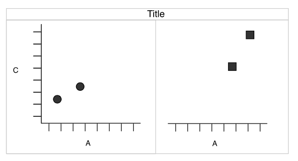Redundancy
Now, dot shapes and facets give the same information. Shapes could be freed for another meaningful variable
layers
for real
tribble( ~x, ~y, ~shape, 25L, 11L, "circle", 0L, 0L, "circle", 75L, 53L, "square", 200L, 300L, "square") %>% ggplot(aes(x = x, y = y, shape = shape)) + geom_point(size = 4) + facet_wrap(~ shape) + coord_cartesian() + theme_classic(base_size = 18)
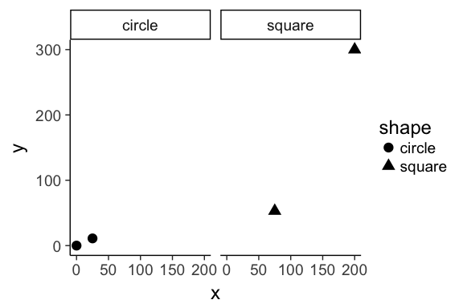

Motivation for this layered system
football example
Data visualisation is not meant just to be seen but to be read, like written text Alberto Cairo
Using the Euro Club Index dataset
# A tibble: 1,556 x 12
club score year country n rank allRank atb atw eb
<chr> <int> <int> <chr> <int> <int> <int> <int> <int> <int>
1 ManUnited 1876 2001 ENG 20 1 6 2031 1831 1927
2 Liverpool 1876 2001 ENG 20 2 5 2020 1826 1918
3 Leeds 1843 2001 ENG 20 3 11 1979 1793 1880
4 Arsenal 1820 2001 ENG 20 4 14 1946 1776 1868
5 Chelsea 1794 2001 ENG 20 5 18 1860 1738 1865
6 Ipswich 1744 2001 ENG 20 6 31 1830 1710 1840
7 Sunderland 1732 2001 ENG 20 7 34 1802 1688 1813
8 AstonVilla 1725 2001 ENG 20 8 42 1775 1667 1796
9 Newcastle 1704 2001 ENG 20 9 46 1765 1663 1792
10 Middlesbrough 1699 2001 ENG 20 10 49 1737 1661 1791
# ... with 1,546 more rows, and 2 more variables: ew <int>, tenth <int>source John Burn-Murdoch working at the Financial Times
questions & solutions
Questions
- which countries have the best teams?
- which leagues are the most/least balanced?
- what is the 'quality gap' between a given pair of leagues?
- how does the nth best team in league x today compare to its predecessors?
- how have all of the above changed over time?
Stat solutions
- linear comparison
- distribution of parts within the whole
- difference in area between two curves
- value in context
- evolution of an already detailed pattern over time
Visual solutions
points
points on a line
ribbon
shaded range
faceted plots
source John Burn-Murdoch working at the Financial Times
1. which countries have the best teams in 2016?
oneSeason %>% ggplot(aes(x = year, y = score, colour = country)) + geom_point(size = 3) + scale_x_discrete() + theme_bw(base_size = 18)
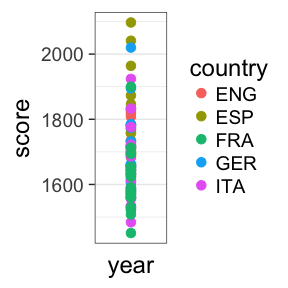
comments
size = 3increases the size of all dots. Not inaes()scale_x_discreteis to force the 1 value on the x axis to be discretetheme_bw()is a pre-defined black/white theme, where all fonts are set to size = 18
Issue
we can't see much: Improve the x mapping
1. which countries have the best teams in 2016?
with rank
oneSeason %>%
ggplot(aes(x = rank, y = score,
colour = country)) +
geom_point(size = 3) +
theme_bw(18)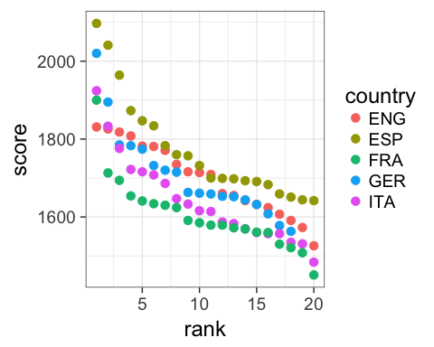
comments
scale_x_discreteuseless, continuous variable.- omit
base_size =intheme_bw()(1st argument)
Spain
Now obvious that Spain does well, even for low ranking clubs
2. which leagues are most/least balanced in 2016?
oneSeason %>%
ggplot(aes(rank, score,
colour = country)) +
geom_line() +
geom_point(size = 3) +
theme_bw(18)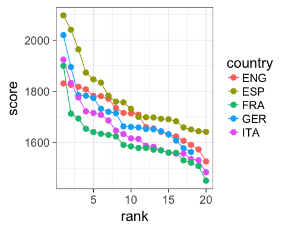
comments
aes()define inggplot()are passed on all subsequentgeomxandycould be omitted, best to specify
Issue
Hard to see differences, ENG seems more coherent
2. which leagues are most/least balanced in 2016?
with range
oneSeason %>%
group_by(country) %>%
summarise(min = min(score),
max = max(score),
range = max - min) %>%
mutate(country = forcats::fct_reorder(country, range)) %>%
ggplot(aes(x = "2016", y = range, fill = country)) +
geom_col(position = "dodge") +
theme_classic(18)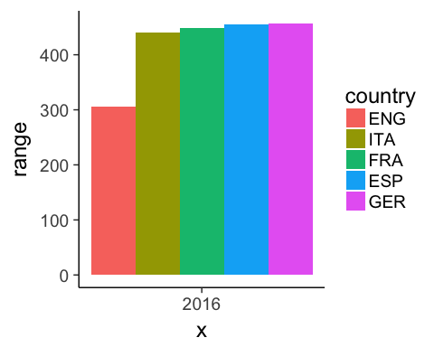
Tip x-axis
force the discretization using 2016 as character
Tip fill
use dodging to get all bars on the same x index
Tip fill order
reorder levels based on a numeric variable using fct_reorder
3. Quality gap between England and Spain in 2016?
score diff at each rank
oneSeason %>%
select(score, rank, country) %>%
filter(country %in% c("ENG", "ESP")) %>%
spread(country, score) %>%
rowwise() %>%
mutate(gap = ESP - ENG,
min = min(ESP, ENG),
max = max(ESP, ENG)) %>%
ggplot(aes(x = rank, fill = gap > 0)) +
geom_rect(aes(xmin = rank - 0.5,
xmax = rank + 0.5,
ymin = min, ymax = max), alpha = 0.8) +
theme_classic(18) +
scale_fill_manual(name = "gap", labels = c("ENG", "ESP"),
values = c("royalblue", "red3")) +
labs(title = "quality gap",
subtitle = "between England and Spain",
caption = "by John Burn-Murdoch")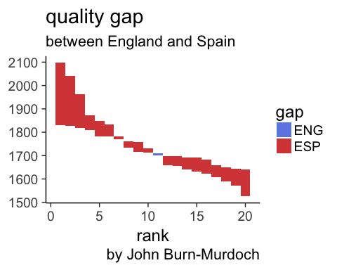
comments
- spread so diff is easy to compute between column
rowwise()mandatory to get the right min and max
Spain clubs
are performing better at every rank except #11
4.How does the nth best English team in 2016 compare to its predecessors?
oneSeason %>%
filter(country == "ENG") %>%
ggplot(aes(x = rank, y = score)) +
geom_ribbon(aes(ymin = atw, ymax = atb),
fill = "royalblue", alpha = 0.5) +
geom_line(size = 1.5, colour = "royalblue") +
geom_point(size = 3, colour = "royalblue") +
theme_bw(18) +
scale_fill_manual(name = "gap", labels = c("ENG", "ESP"),
values = c("royalblue", "red3")) +
labs(title = "Comparison of the nth best \nteam to its predecessors",
subtitle = "in England in 2016",
caption = "by John Burn-Murdoch")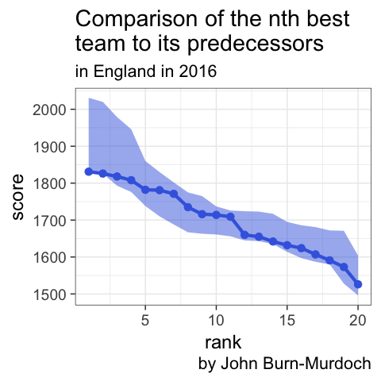
5. How to visualise over time?
facet: best country
allSeasons %>%
ggplot(aes(rank, score,
colour = country)) +
geom_line() +
#geom_point(size = 1.5) +
theme_classic(18) +
facet_wrap(~ year)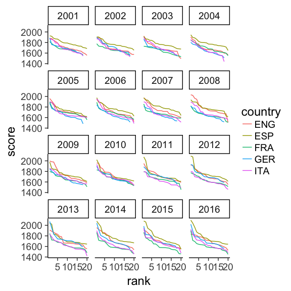
5. How to visualise over time?
facet
gap code
allSeasons %>%
select(score, year, rank, country) %>%
filter(country %in% c("ENG", "ESP")) %>%
spread(country, score) %>%
rowwise() %>%
mutate(gap = ESP - ENG,
min = min(ESP, ENG),
max = max(ESP, ENG)) %>%
ggplot(aes(x = rank, fill = gap > 0)) +
geom_rect(aes(xmin = rank - 0.5,
xmax = rank + 0.5,
ymin = min, ymax = max), alpha = 0.8) +
theme_classic(18) +
scale_fill_manual(name = "gap", labels = c("ENG", "ESP"),
values = c("royalblue", "red3")) +
labs(title = "quality gap",
subtitle = "between England and Spain",
caption = "by John Burn-Murdoch") +
facet_wrap(~ year)thanks to tidy data
only add the facet layer to split into panels
5. How to visualise over time?
facet: gap plot
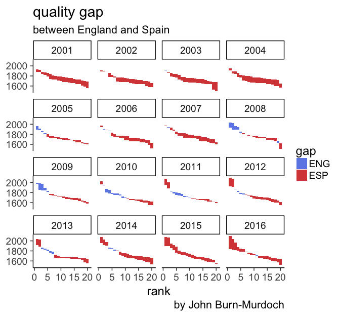
your turn
iris dataset
rstudio cheatsheet
save as tibble the long data.frame
iris <- as_tibble(iris) iris
# A tibble: 150 x 5
Sepal.Length Sepal.Width Petal.Length Petal.Width Species
<dbl> <dbl> <dbl> <dbl> <fctr>
1 5.1 3.5 1.4 0.2 setosa
2 4.9 3.0 1.4 0.2 setosa
3 4.7 3.2 1.3 0.2 setosa
4 4.6 3.1 1.5 0.2 setosa
5 5.0 3.6 1.4 0.2 setosa
6 5.4 3.9 1.7 0.4 setosa
7 4.6 3.4 1.4 0.3 setosa
8 5.0 3.4 1.5 0.2 setosa
9 4.4 2.9 1.4 0.2 setosa
10 4.9 3.1 1.5 0.1 setosa
# ... with 140 more rowssmart printing of the iris dataset
as a tibble to avoid printing all 150 rows
change default theme
I set for this course the following to avoid the grey background and print bigger text
ggplot2::theme_set(ggplot2::theme_bw(18))
Draw your first plot
Petal: Length versus Width
iris %>% ggplot() + geom_point(aes(x = Petal.Width, y = Petal.Length))
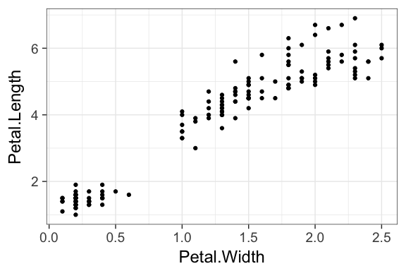
geometric objects
geoms define the type of plot which will be drawn
geom_point()
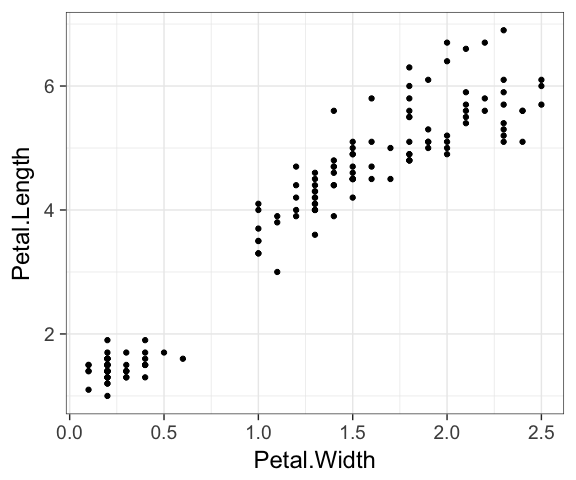
geom_line()
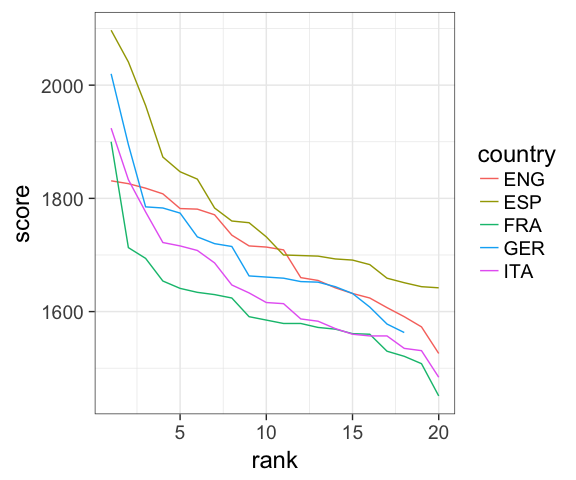
geom_bar()
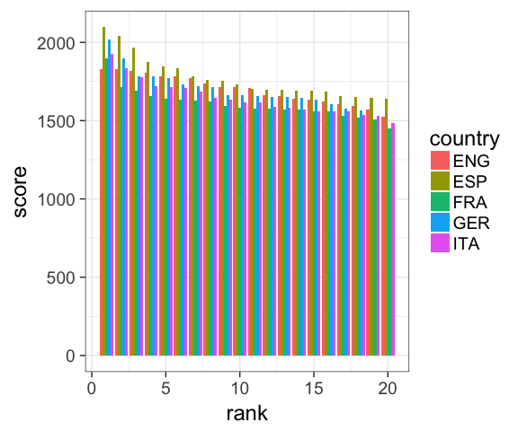
geom_boxplot()

geom_histogram()
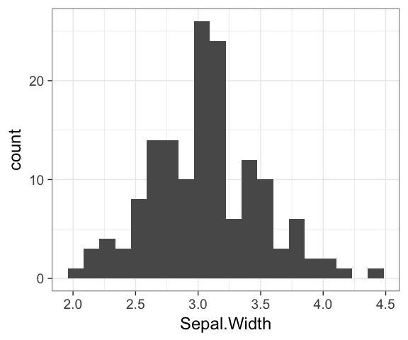
geom_density()
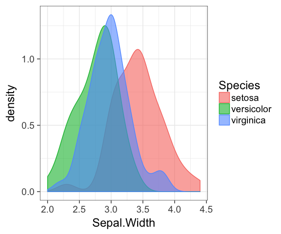
- Have a look at the cheatsheet or the ggplot2 online documentation to list more possibilities.
Mapping aesthetics
definitions
- aesthetics map the columns of a
data.frame/tibbleto the variable each ggplot2geomis expecting. - example
geom_point()requires at least the x and y coordinates for each point.
ggplot(iris) + geom_point(aes(x = Petal.Width, y = Petal.Length))
| Sepal.Length | Sepal.Width | Petal.Length | Petal.Width | Species |
|---|---|---|---|---|
| 5.1 | 3.5 | 1.4 | 0.2 | setosa |
| 4.9 | 3.0 | 1.4 | 0.2 | setosa |
| 4.7 | 3.2 | 1.3 | 0.2 | setosa |
| 4.6 | 3.1 | 1.5 | 0.2 | setosa |
| 5.0 | 3.6 | 1.4 | 0.2 | setosa |
Unmapped paramaters
Additional arguments such as the colour, the transparency (alpha) or the size.
ggplot(iris) +
geom_point(aes(x = Petal.Width,
y = Petal.Length),
colour = "blue", alpha = 0.6,
size = 3)
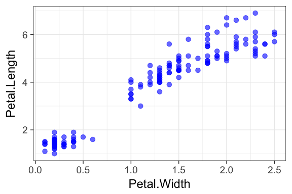
important
see that paramaters define outside the aesthetics aes() are applied to all data
Mapping aesthetics
colour
colour, alpha or size can also be mapped to a column in the data frame.
For example: We can attribute a different color to each species:
ggplot(iris) +
geom_point(aes(x = Petal.Width,
y = Petal.Length,
colour = Species),
alpha = 0.6, size = 3)
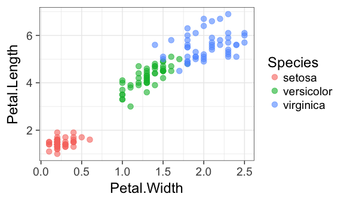
important
Note that the colour argument now is inside aes() and must refer to a column in the dataframe.
Mapping aesthetics
shape
ggplot(iris) +
geom_point(aes(x = Petal.Width, y = Petal.Length, shape = Species, colour = Species),
alpha = 0.6, size = 3)
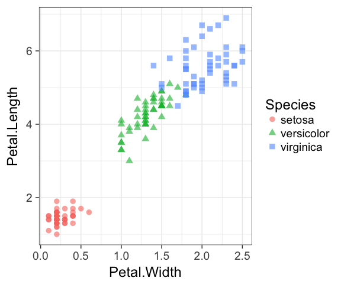
Mapping aesthetics
group
problem, toy data
# sample data
set.seed(12)
d <- data.frame(expand.grid(x = letters[1:4],
g = factor(1:2)),
y = rnorm(8))
d
x g y 1 a 1 -1.4805676 2 b 1 1.5771695 3 c 1 -0.9567445 4 d 1 -0.9200052 5 a 2 -1.9976421 6 b 2 -0.2722960 7 c 2 -0.3153487 8 d 2 -0.6282552
problem, plot data
ggplot(d, aes(x, y, colour = g)) + geom_line() + geom_point()
geom_path: Each group consists of only one observation. Do you need to adjust the group aesthetic?
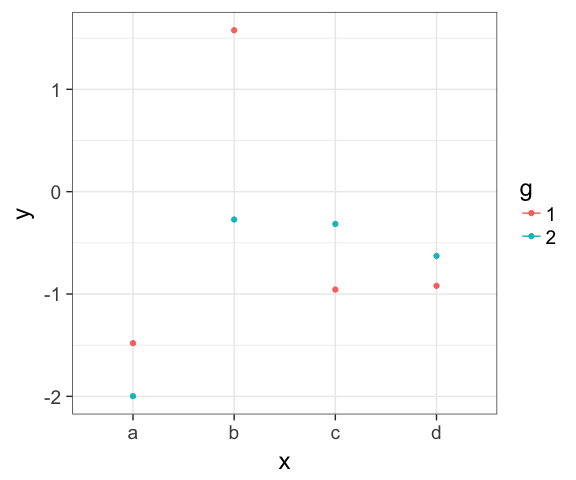
Mapping aesthetics
group
solution: grouping
ggplot(d, aes(x, y, colour = g, group = g)) + geom_line() + geom_point()
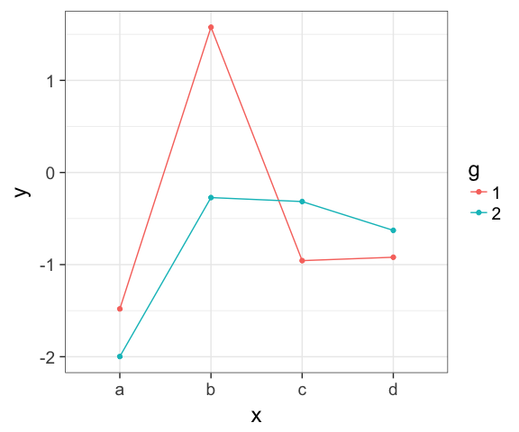
force grouping
ggplot(d, aes(x, y, colour = g, group = 1)) + geom_line() + geom_point()
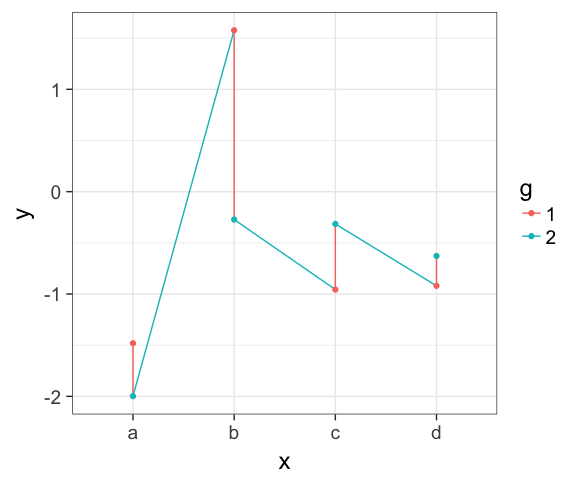
Labels
It is easy to adjust axis labels and the title
ggplot(iris) +
geom_point(aes(x = Petal.Width,
y = Petal.Length,
colour = Species),
alpha = 0.6, size = 3) +
labs(x = "Width",
y = "Length",
colour = "flower",
title = "Iris",
subtitle = "petal measures",
caption = "Fisher, R. A. (1936)")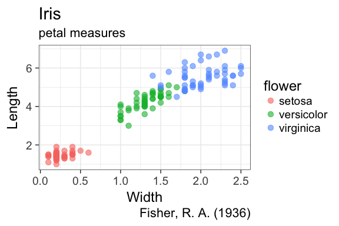
Histograms
ggplot(iris) +
geom_histogram(aes(x = Petal.Length,
fill = Species),
alpha = 0.8,
bins = 30)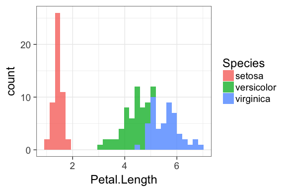
# default #' bin is 30 # to avoid warnings
Density plot
The density is the count divided by the total number of occurences.
ggplot(iris) +
geom_density(aes(x = Petal.Length,
fill = Species),
alpha = 0.6)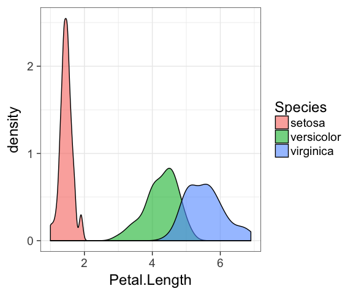
Overlaying plots
Density plot and histogram
ggplot(iris) + geom_histogram(aes(x = Petal.Length, y = ..density..), fill = "darkgrey", binwidth = 0.1) + geom_density(aes(x = Petal.Length, fill = Species, colour = Species), alpha = 0.4) + theme_classic()
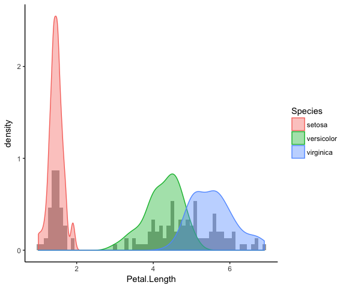
Stat functions
transform data
- variables surrounded by two pair of dots (
..variable..) are intermediate values calculated byggplot2using stat functions geomuses astatfunction to transform the data:geom_histogram()usesstat_bin()to divide the data into bins and count the number of observations in each bin.stat_bin()computes for example:..count..,..density..,..ncount..and..ndensity..(see?stat_bin())- stat variable for density plot:
..density.. stat_identityis used for scatter plots orgeom_col(), no transformation
1D
stat_countstat_bin
2D
stat_density_2dstat_bin_2dstat_ellipse
3D
stat_contourstat_summary_hex
source: ggplot2 cheatsheet by Rstudio
Barcharts
categorical variables
definitions
- By default,
geom_bar()counts the number of occurences for each values of a categorical variable. geom_bar()usesstat_count()to compute these values (creating a newcountcolumn)
ggplot(iris) + geom_bar(aes(x = Species))
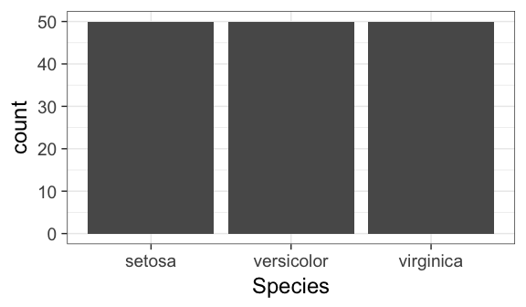
# or: geom_bar(aes(x = Species, y = ..count..))
Barcharts
categorical variables
map a continous variable on y axis
- we need to override the default call to
stat_count() stat = "identity"will forcegeom_bar()to usestat_identity()instead
ggplot(iris) +
geom_bar(aes(x = Species, y = Petal.Length),
stat = "identity")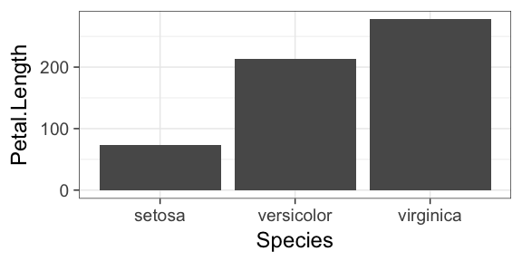
Update v2.1
since version 2.1, thanks to Bob Rudis, geom_col() does require a y variable
geom_col
ggplot(iris) + geom_col(aes(x = Species, y = Petal.Length))
Stacked barchart
categorical variables
force factor to convert continuous -> discrete
mtcars %>%
ggplot() +
geom_bar(aes(x = factor(cyl),
fill = factor(gear)))
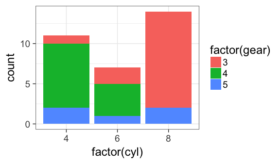
Dodged barchart (side by side)
categorical variables
mtcars %>%
mutate(cyl = factor(cyl),
gear = factor(gear)) %>%
complete(cyl, gear) %>%
ggplot() +
geom_bar(aes(x = cyl,
fill = gear),
position = "dodge")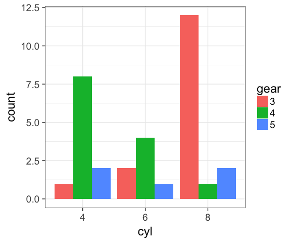
Complete
the combination gear 4 / cyl 8 is missing. Using tidyr::complete() to avoid bars with different widths.
Stacked barchart for proportions
categorical variables
mtcars %>%
mutate(cyl = factor(cyl),
gear = factor(gear)) %>%
complete(cyl, gear) %>%
ggplot() +
geom_bar(aes(x = cyl,
fill = gear),
position = "fill")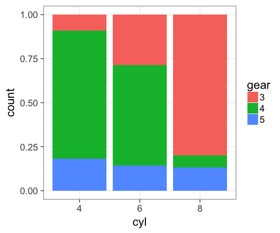
Stacked barchart for proportions
pie charts
We can easily switch to polar coordinates:
mtcars %>%
mutate(cyl = factor(cyl),
gear = factor(gear)) %>%
complete(cyl, gear) %>%
ggplot() +
geom_bar(aes(x = cyl,
fill = gear),
position = "fill") +
coord_polar()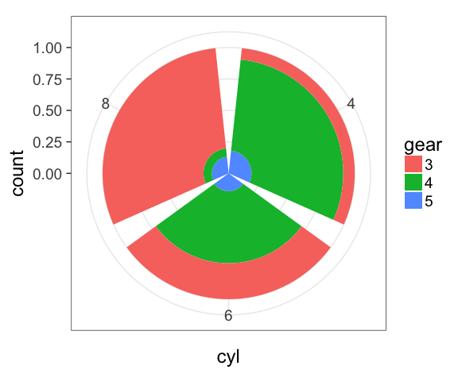
Boxplot
IQR, median
ggplot(mtcars) +
geom_boxplot(aes(x = factor(cyl),
y = mpg))
Boxplot
dodge by default
ggplot(mtcars) +
geom_boxplot(aes(x = factor(cyl),
y = mpg,
fill = factor(am)))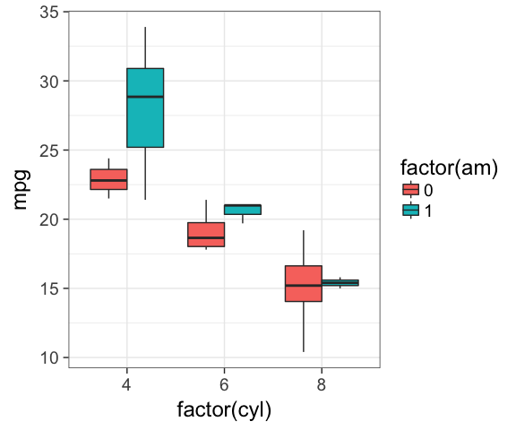
Boxplots are unreliable
n = 2!
ggbeeswarm
ggplot(mtcars) +
ggbeeswarm::geom_quasirandom(aes(x = factor(cyl),
y = mpg,
colour = factor(am)))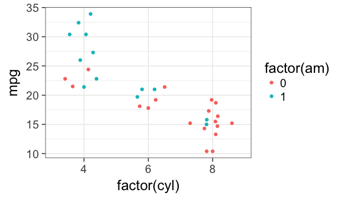
ggplot(iris, aes(x = Species, y = Petal.Length)) + geom_violin() + ggbeeswarm::geom_quasirandom()

Custom colors
manual entry
- using
scale_fill_manual()andscale_color_manual() - not handy as you must provide as much colours as groups
ggplot(mtcars) +
geom_boxplot(aes(x = factor(cyl), y = mpg,
fill = factor(am), color = factor(am))) +
scale_fill_manual(values = c("red", "lightblue")) +
scale_color_manual(values = c("purple", "blue"))
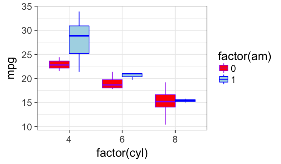
Predefined color palettes
library(RColorBrewer) display.brewer.all()
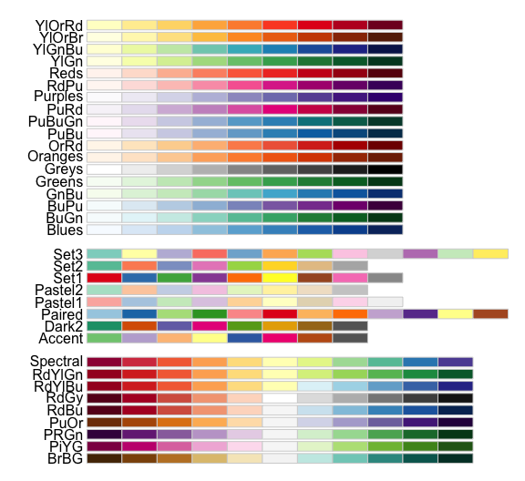
Custom colors
using brewer
ggplot(mtcars) +
geom_boxplot(aes(x = factor(cyl), y = mpg,
fill = factor(am), colour = factor(am))) +
scale_fill_brewer(palette = "Pastel2") +
scale_colour_brewer(palette = "Set1")
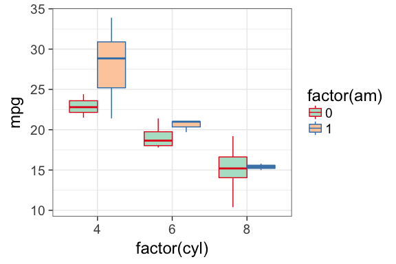
colour gradient
ggplot2 default is ugly
default
mtcars %>%
ggplot(aes(x = wt,
y = mpg,
colour = hp)) +
geom_point(size = 3)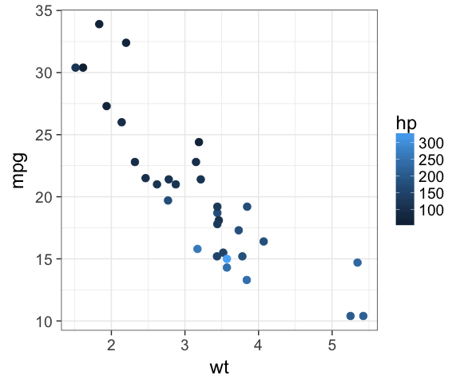
viridis
mtcars %>%
ggplot(aes(x = wt,
y = mpg,
colour = hp)) +
geom_point(size = 3) +
viridis::scale_colour_viridis()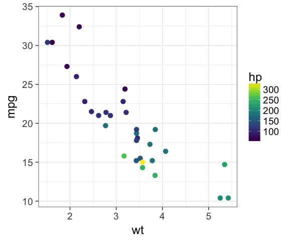
viridis
- 4 different scales
- viridis is color blind friendly and nice in b&w
- default in
ggplot2dev version
aesthetic trick
using strings
- use a plain character inside
aes() - goes into the legend.
- only for few layers when lazy enough to create the variable in the dataframe.
set.seed(123)
dens <- tibble(x = c(rnorm(500),
rnorm(200, 3, 3)))
ggplot(dens) +
geom_line(aes(x), stat = "density") +
geom_vline(aes(xintercept = mean(x),
colour = "mean"),
size = 1.1) +
geom_vline(aes(xintercept = median(x),
colour = "median"),
size = 1.1) -> p
p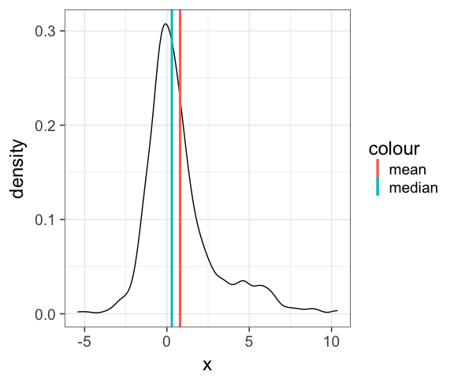
the data argument
each layer can get its own
dens_mode <- tibble(mode = density(dens$x)$x[which.max(density(dens$x)$y)])
p + geom_vline(data = dens_mode,
aes(xintercept = mode, colour = "mode"), size = 1.1) +
theme(legend.position = "top") +
scale_colour_hue(name = NULL) # could be: labs(colour = NULL)
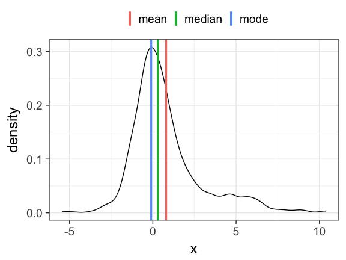
Facets
facet_wrap()
easiest way to create facet with a column name
ggplot(mtcars) + geom_point(aes(x = wt, y = mpg)) + facet_wrap(~ cyl)
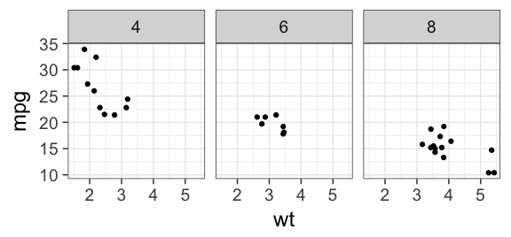
ggplot(mtcars) + geom_point(aes(x = wt, y = mpg)) + facet_wrap(~ cyl, ncol = 2)
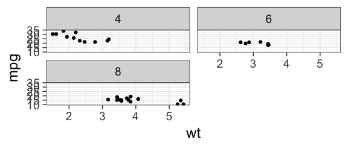
Facets
free scales
ggplot(mtcars) + geom_point(aes(x = wt, y = mpg)) + facet_wrap(~ cyl, scales = "free_x")
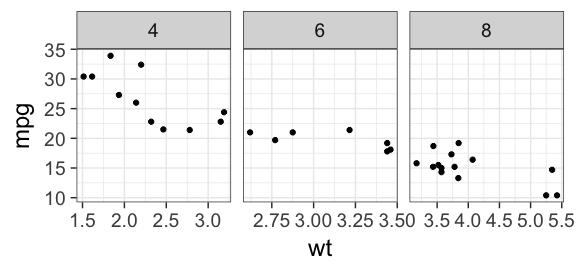
ggplot(mtcars) + geom_point(aes(x = wt, y = mpg)) + facet_wrap(~ cyl, scales = "free")
Facets
facet_grid() to lay out panels in a grid
Specify a formula
the rows on the left and columns on the right separated by a tilde ~ (i.e by)
ggplot(mtcars) + geom_point(aes(x = wt, y = mpg)) + facet_grid(am ~ cyl)
Facets
facet_grid() cont.
Specify one row/column
A dot (.) means no faceting for this axis. Mimic facet_wrap()
ggplot(mtcars) + geom_point(aes(x = wt, y = mpg)) + facet_grid(. ~ cyl)
Facets
labeller
Add the column names with labeller
ggplot(mtcars) +
geom_point(aes(x = wt, y = mpg)) +
facet_grid(am ~ cyl,
labeller = label_both)Exporting
interactive or passive mode
right panel
- Using the Export button in the Plots panel

Rmarkdown reports
- If needed, adjust the chunk options:
- size:
fig.height,fig.width - ratio:
fig.asp… - others

ggsave
- save the
ggplotobject, 2nd argument - guess the type of graphics by the extension
ggsave("aes_trick.png", p,
width = 60, height = 30, units = "mm")
ggsave("aes_trick.pdf", p,
width = 50, height = 50, units = "mm")Extensions
ggplot2 introduced the possibility for the community to contribute and create extensions.
They are referenced on a dedicated site
plot your data!
Anscombe ** 10
never trust summary statistics alone; always visualize your data Alberto Cairo

source: Justin Matejka, George Fitzmaurice Same Stats, Different Graphs…
Art
by Marcus Volz
A compilation of some of my gifs created with #rstats #ggplot2 #gganimate #tweenr https://t.co/nCppSOZv4W
— Marcus Volz (@mgvolz) 4 avril 2017
Missing features
geoms list here
geom_tile()heatmapgeom_bind2d()2D binninggeom_abline()slope
stats list here
stat_ellipse()stat_summary()easy mean 95CI etc.geom_smooth()linear/splines/non linear
plot on multi-pages
ggforce::facet_grid_paginate()facetsgridExtra::marrangeGrob()plots
positions list here
position_jitter()random shiftquasirandom()is better
coordinate / transform
coord_cartesian()for zooming incoord_flip()exchanges x & yscale_x_log10()and yscale_x_sqrt()and y
customise theme elements
- legend & guide tweaks
- major/minor grids
- font, faces
- margins
- labels & ticks
- strip positions
programming
Sepal.Length is not exposed
iris_plot <- function(flower) {
ggplot(iris, aes(x = Species, y = flower)) +
geom_violin() +
ggbeeswarm::geom_quasirandom()
}
iris_plot(flower = Sepal.Length)
Warning in FUN(X[[i]], ...): restarting interrupted promise evaluation
Error in FUN(X[[i]], ...): object 'Sepal.Length' not found
strings does not help
iris_plot <- function(flower) {
ggplot(iris, aes(x = Species, y = flower)) +
geom_violin() +
ggbeeswarm::geom_quasirandom()
}
iris_plot(flower = "Sepal.Length")
Warning in f(...): The default behavior of beeswarm has changed in version 0.6.0. In versions <0.6.0, this plot would have been dodged on the y- axis. In versions >=0.6.0, grouponX=FALSE must be explicitly set to group on y-axis. Please set grouponX=TRUE/FALSE to avoid this warning and ensure proper axis choice.
aes_string() expects strings
iris_plot <- function(flower) {
ggplot(iris, aes_string(x = "Species", y = flower)) +
geom_violin() +
ggbeeswarm::geom_quasirandom()
}
iris_plot(flower = "Sepal.Length")
aes_string() expects strings
iris_plot <- function(flower) {
ggplot(iris, aes_string(x = "Species", y = flower)) +
geom_violin() +
ggbeeswarm::geom_quasirandom()
}
iris_plot(flower = "Petal.Length")